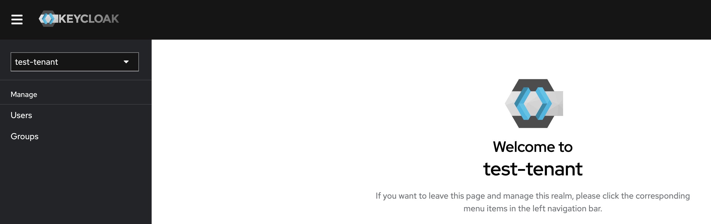
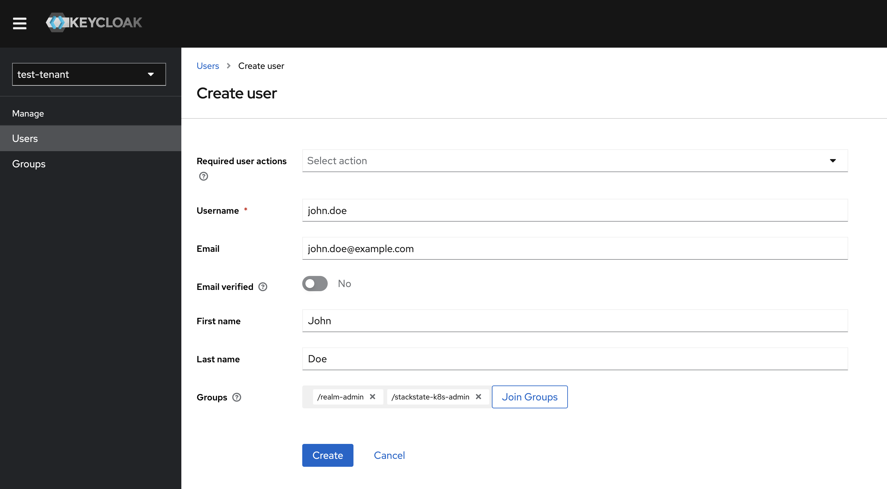

User Management
Users of the SUSE Cloud Observability tenants (SUSE Cloud Observability instances) are managed with Keycloak. Each customer (tenant) has a dedicated Keycloak realm. A link to the Keycloak console is sent in the welcome message when a user is created.
SUSE Cloud Observability redirects users to Keycloak for authentication. Users are expected to be members of one or more Keycloak groups.
The predefined Keycloak groups:
-
realm-admin: Members of this group can log in to the Keycloak realm console and perform user management operations.
-
stackstate-k8s-troubleshooter: Users in this group are assigned the
stackstate-k8s-troubleshooterKeycloak client role, which maps to the SUSE Cloud Observability role with the same name. The role grants regular SUSE Cloud Observability permissions. -
stackstate-k8s-admin: Users in this group are assigned the
stackstate-k8s-adminKeycloak client role, which maps to the SUSE Cloud Observability role with the same name. The role grants privileged SUSE Cloud Observability permissions.
Keycloak management modes
Basic mode (default)
Basic mode is available for all SUSE Cloud Observability tenants. It provides:
-
User creation and management
-
Group membership assignment
-
Password and credential management
This is the default mode and covers the user management operations described in the sections below.
Advanced mode
Advanced mode provides full Keycloak realm administration capabilities. It is available for Enterprise tenants — contact SUSE support to enable it.
With Advanced mode, tenant administrators can:
-
Configure SSO identity providers (for example, Microsoft Entra ID, Google, or other OIDC providers)
-
Customize authentication flows and login settings
-
Manage client scopes and protocol mappers
| Do not modify core realm resources or predefined clients. Changes to these resources can break the integration between Keycloak and SUSE Cloud Observability. |
For SSO identity provider setup, see:
User management URL
When a new user is created, they receive a welcome message containing a link to the Keycloak user management page. This link is exclusively for the tenant administrator, who is the first user by default. The URL format is: https://<keycloak_FQDN>/realms/<your_dedicated_Keycloak_realm>/account.
User management
-
Log in to Keycloak Admin Console.

Manage users
-
In the left-hand menu, select
Usersunder theManagesection.
Adding a new user
Click the Add user button and enter the user information, such as 'Username', 'Email', 'First Name', and 'Last Name'.
-
Leave
Required users actionsfield empty. -
Add the user to the required groups.
-
Click
Save.The welcome message with the sign-up link and the links to the SUSE Cloud Observability tenant, Keycloak Admin and Account consoles are emailed to the user.
| To activate the account, which includes email confirmation and the password reset, the user must follow the sign-up link. |


Group membership
-
Log in to the Keycloak Admin Console.
-
In the
Groupssection, search for the group you want to manage. -
Click the group name to open group details and go to the
Memberstab. -
To add a new group member, press the
Add Memberbutton and select the required users. -
To delete users from the group, select the users from the list, then from the menu that at the same line as the
Add memberbutton marked as "⋮", selectLeave group.